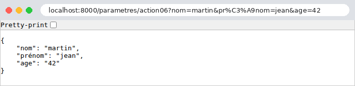
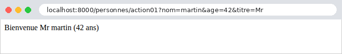

3. The view template
A view requires information sent by the browser: the parameters of the URL ([?nom=martin&age=42]), form fields, the request body, and sometimes a request header. The original course refers to all of this information as the action model; here, we will call it the view model. This chapter shows how a view [Django] retrieves this information, converts it to the correct type, and validates it. This process is called data binding.
[Django] provides access to the request information via the [HttpRequest] object (Example 05), in the form of character strings. To convert and validate them, it has a single, central tool: the forms from the [django.forms] module. A [Django] form is a class that describes the expected data, field by field: each field can convert the received string to its data type (an integer, a date, a list, etc.) and verify constraints (“required,” “an integer between 0 and 150,” etc.). Despite their name, forms are not limited to HTML forms: they also validate the parameters of a URL or a JSON document. We’ll first read the parameters manually (example 07), then use forms to handle their conversion and validation (examples 08 through 12). In the next chapter, these same forms will also be displayed in HTML.
Note the terminology: the word “model” has a specific meaning in [Django], referring to the classes in ORM (Chapter 7). The model of a view, as defined in this chapter, is what it receives from the request. We will organize the classes that describe it into [modeles.py] files, never [models.py], which is reserved for the ORM.
Examples 07 through 12 are run in the same way as those in the previous chapter: open a terminal in the example directory, with the virtual environment activated ([python manage.py runserver]); [Ctrl-C] stops the server. Most use the [JsonLisible] middleware from Example 03, resulting in a readable JSON. We will only comment on their configuration files when they introduce something new.
3.1. Example 07: The URL settings
The parameters for URL are the portion that follows [?]: [?nom=martin&age=42]. This portion is called the query string. Each parameter is a pair of [nom=valeur]; the pairs are separated by [&]. Views of the [parametres] application:
- Line 12: The [GET] attribute of the query contains the parameters of URL. Its name is misleading: it exists regardless of the query method, including for a POST query whose URL has parameters. It is a [QueryDict] object, a dictionary whose [get] method returns the value of a parameter—already decoded—or [None] if it is absent;
- Line 13: The view displays the value and its type: [type(nom)] returns the class of the value, and [__name__] returns the name of that class. A value retrieved from URL is always a string ([str]);
- lines 26–36: a required parameter and a manual conversion that distinguishes between the two possible errors. The operator [is] checks for equality; [texte is None] is the correct way to check for the absence of a value. [raise BadRequest(message)] terminates the view with a 400 response (Bad Request: the request is invalid), just as [Http404] terminated the view with a 404 response (example 03). The function [int] converts a string to an integer and throws the exception [ValueError] if the string is not an integer: the [try] / [except] block catches this exception to return our own error;
- line 42: the second parameter of [get] is a default value, used if the parameter is missing. This is a typical case for a page number in a list. Note that the default value is a string, ["1"], just as the received value would be;
- line 50: There is no requirement to name the variable [Python] the same as the parameter of URL. Search engines often use a short parameter, such as [q] (query);
- line 57: [dict()] returns all parameters from URL in a standard [Python] dictionary, which the view converts to JSON (example 03).
Let’s test each view with [curl]. A parameter is present, then absent:
The quotation marks around URL are necessary in a terminal: without them, the shell would interpret [&] (which runs a command in the background under [Linux]) and [?]. The value [None], when inserted into an f-string, becomes the text [None]. A value containing spaces or special characters must be encoded as URL: a space becomes [%20] (or [+]), and [&] becomes [%26] (otherwise, it would separate two parameters). The browser handles this automatically; with [curl], you have to write it out. [Django] decodes the value before the view reads it:
A parameter that exists but is empty ([?nom=]) returns an empty string, not [None]: the view can distinguish between the two cases. The age value, followed by the manual conversion—successful, without a parameter, and failed:
The value [42] received by view 02 is a string; the value from view 03, after conversion, is an integer. The [int] function is space-tolerant: [?age=%2042] (“42” preceded by a space) also returns 42. Both errors produce a 400 response. In debug mode, this is the error page for [Django], displaying our message:

The default value and the renamed parameter:
All parameters at once. The parameter [nom] appears twice:
The parameter [nom] retains only its most recent value in the dictionary. We will see in Example 10 that [request.GET], on the other hand, has retained all of them. The age remained a string (["42"], enclosed in quotation marks in JSON): no conversion was requested. In a browser (here, [Chromium]), JSON is displayed exactly as the server formatted it; the “Pretty-print” checkbox would indent it if it were not already indented. The address bar also shows the encoding of accented characters in URL ([é] becomes [%C3%A9], with its two bytes in [UTF-8]):

This first example illustrates the limitations of the manual approach: for each parameter, you must write the reading, conversion, and handling of missing values and errors. With ten parameters, the view code would be buried under these checks, and there would be no way to express the rules (“a string of 2 to 20 characters”). It’s better to describe what is expected and let the framework verify it. That is the purpose of the following example.
3.2. Example 08: A view model described by a class
A view model can be described by a class: a [Django] form, with one field per expected parameter. The field type specifies how to convert the received string, and its parameters specify the constraints it must satisfy. [Django] provides about thirty field types: [CharField] (a string), [IntegerField], [DecimalField], [FloatField], [BooleanField], [DateField], [EmailField], [URLField], [ChoiceField] (a value from a list), [MultipleChoiceField], [FileField]...
3.2.1. The template: people/modeles.py
- Line 4: Import the module [forms] from [Django]. This is standard practice: the fields will be named [forms.CharField], [forms.IntegerField]...;
- line 9: a form is a class that inherits from [forms.Form];
- lines 11–17: the fields, written as attributes of the class (not of the object: they are defined in the body of the class, outside of any method). [Django] discovers them by examining the class; their order is the same as in the declaration. All fields are required by default ([required=True]): a missing or empty parameter is an error;
- line 11: the name must be between 2 and 20 characters long. A [CharField] also removes the spaces surrounding the value (parameter [strip], default [True]) before validating it;
- line 13: The age is an integer between 0 and 150. The field converts the string to an integer—this is the function of view 03 in example 07, in a single line;
- line 15: the title must be one of the three listed values. The options are pairs (value, label): the label will be used when the field is displayed on a page (Example 18);
- line 17: the email address is optional ([required=False]); if provided, it must be valid.
This template describes the expected data; it contains no validation instructions. This is known as a declarative style. A form is used in three steps: it is created with the received data ([PersonneModele(request.GET)]: a form “linked” to data); it is checked for validity ([is_valid()]), which triggers the conversion and validation of each field; then you read either the converted values ([cleaned_data], a dictionary) or the errors ([errors], a dictionary that associates each field with an error with the list of its messages). Each field is converted and validated independently of the others: all errors are detected at once.
3.2.2. The relationship: people/liaison.py
[Symfony] had an attribute, [#[MapQueryString]], which built and validated the model before calling the action. [Django] has nothing of the sort for function views. But we know from Example 02 that a decorator can wrap a view to act before it: let’s write a decorator that builds the model from the parameters of URL, validates it, and passes it to the view.
- Lines 8–11: A "custom" exception: a class that inherits from the [Exception] class of [Python]. Its constructor calls the parent class’s constructor ([super().__init__(...)], with the exception message), then stores the form in an attribute: whoever catches the exception will find the errors there;
- Lines 17–28: a parameterized decorator. [@depuis_url(PersonneModele)] executes in two steps: [depuis_url(PersonneModele)] returns the function [decorateur], which is applied to the view, and in turn returns the function [enveloppe], which replaces the view. Functions defined inside another function retain its variables ([classe_modele], [vue]) even after they have finished their work: this is called a closure;
- Line 20: [@wraps(vue)], from the [functools] module, provides the wrapper with the view’s name and documentation: error messages and tools from [Django] will continue to refer to [action01], not [enveloppe];
- Line 21: The wrapper receives what [Django] passes to the view: the request, followed by the route parameters, which it does not know in advance. [*args] receives the parameters passed by position (in a tuple), while [**kwargs] receives those passed by name (in a dictionary); when called on line 26, [*args] and [**kwargs] pass them on as-is;
- Lines 22–24: The form is bound to the parameters of URL and validated; if it is invalid, the wrapper raises an exception, and the view is never called—so it does not have to worry about invalid data;
- line 26: otherwise, the view is called, with one additional parameter: the converted and validated values.
3.2.3. The view: people/views.py
- Lines 14–15: Two decorators are stacked; the one closest to the function is applied first. [require_GET] therefore wraps the wrapper of [depuis_url]: the HTTP method is checked before the parameters;
- line 16: the view receives the validated model, in the form of a dictionary;
- lines 17–21: the view returns the received parameters as-is, followed by the model and the age type, to illustrate the difference.
3.2.4. Error handling: config/middleware.py
Who handles the [ModeleInvalide] exception? Without further action, [Django] itself handles it with a 500 response: to it, it’s just another exception. We want an error response for JSON, with status code 400, in our own format. That’s the role of middleware:
- lines 11–20: the [JsonLisible] middleware from Example 03;
- lines 25–30: a second middleware, whose method [__call__] simply passes the request to the next component in the chain;
- lines 35–42: the [process_exception] method. In addition to [__call__], a middleware module may have methods that [Django] calls at specific points in the processing (the chapter on the lifecycle will cover them all). [process_exception] is called when an exception is thrown from the view. It either returns a response—which replaces the error page generated by [Django]—or returns [None], allowing [Django] to handle the exception as usual. Declared in the [MIDDLEWARE] configuration, the middleware applies to all views in the application: every view that validates a model benefits from it, without having to write a single line of error-handling code;
- line 36: if it is not a validation error, the middleware does nothing;
- lines 39–41: the list of errors, in the form of dictionaries, is calculated using a list comprehension with two loops: [for]—for each field with an error, for each message associated with that field. [items()] iterates through a dictionary in (key, value) pairs;
- line 42: a response JSON, with status code 400. It then travels up the middleware chain and passes through [JsonLisible] (lines 18–20 of the file [config/settings.py]).
3.2.5. Execution
A valid template:
The parameters received are strings; the template contains the age as an integer (without quotes in JSON), and the missing address is the empty string (the “empty” value of a [CharField] or a [EmailField]; that of an optional [IntegerField] would be [None]). A name surrounded by spaces ([%20]) and a present address:
The spaces surrounding the name were removed by the field: the view receives the cleaned-up value ([cleaned_data]). A name consisting solely of spaces would therefore be empty and rejected as missing. No parameters now: the three required fields are missing.
The messages are in French. The form messages are written in English in the code for [Django], but they go through its translation mechanism, and [Django] comes with their translations in about a hundred languages. All you need is for the application language to be French: this is the setting [LANGUAGE_CODE = "fr"] that all our examples have used since Example 01. Four invalid fields at once:
All errors are reported at once, allowing the user to correct everything in one go. Finally, an age that isn’t a number:
Once again, all four errors are reported: the failed age conversion is an error in the [age] field, just like the others. This differs from [Symfony], where the course demonstrated that a failed conversion prevented validation entirely, because it prevented the object from being constructed: a [Django] form, on the other hand, converts and validates each field separately.
3.3. Example 09: Validation Performed by the View
In Example 08, an invalid model interrupts the view, and the application’s middleware responds. This is convenient for a API, whose clients are programs that expect a standardized error response. But a web page often prefers to redisplay the form with error messages: in this case, the view must decide what to do with an invalid model. It uses the form directly, without a decorator. The example no longer has middleware:
3.3.1. The model: people/modeles.py
The model has the fields from Example 08, but this time with our own error messages:
- line 9: a dictionary, defined once and for all, and shared by the three required fields. By convention, a module variable written in uppercase is a constant;
- lines 13–18: the parameter [error_messages] for a field replaces its messages with ours. Each type of error has a code: [required] (field missing or empty), [invalid] (value cannot be converted: an age [abc]), [invalid_choice] (value not in the list), [min_length], [max_length], [min_value], [max_value]... The dictionary associates a message with each code. Messages not listed in the dictionary are those from [Django];
- line 16: the operator [|] merges two dictionaries: the result contains the keys from both (if there is a common key, the one on the right takes precedence). Thus, “age” has two messages for us.
The messages from [Django] are not always appropriate; we have just seen how to replace them, field by field. To replace them throughout the application, we provide translations (see the chapter on internationalization): it is these translations—and not [error_messages]—that must be used in a multilingual application.
3.3.2. The view: people/views.py
- Line 14: The view creates the form, bound to the parameters of URL;
- line 16: [is_valid()] converts and validates each field, and stores any errors in [saisie.errors]. It does not throw any exceptions: the view decides what to do next on its own;
- Lines 19–22: The errors, field by field, are each placed within a [<li>] tag. [format_html_join] generates a segment of HTML for each element in a sequence of values (here, (field, message) pairs produced by a generator expression), based on a text template, [<li>{} : {}</li>]: Each [{}] receives a value from the pair. [format_html] does the same for a single segment. These two functions, from the [django.utils.html] module, have an essential property: the inserted values are escaped;
- lines 23–25: if successful, a welcome message is displayed, along with the converted values.
Escaping a value means replacing the characters that have meaning in HTML ([<], [>], [&], ["], [']) with their entities ([<], [>]...): they will be displayed as-is instead of being interpreted. Without this precaution, a user could enter a “name” containing HTML, or even [JavaScript], which would execute in the browser of anyone viewing the page. This is the most common security vulnerability on the web: script injection (XSS, cross-site scripting). A string, on the other hand, escapes everything: [HttpResponse(f"Bienvenue {nom}")] would be vulnerable. [format_html] returns text marked as “safe” (a [SafeString] object): the already-escaped portions are not escaped a second time when inserted into another ([items], line 22). In the next section, the templates in [Django] will perform this escaping automatically for any value inserted into a page.
A valid entry, followed by an entry containing four errors:


The messages are in French: those from [Django] (the name, the address) and ours (the age, the title). The raw response to the second query—one for a name containing HTML—and the response to a query without a name, with an age that is too high:
The name [<b>martin</b>] (encoded as [%3Cb%3E...] in the URL) is displayed as-is, without being bolded: its tags have been neutralized. Note that the response this time is a 200 status code: the view chose to render a normal page containing the errors.
3.4. Example 10: Multiple Parameters
The same parameter may appear multiple times in a URL: [?couleur=rouge&couleur=vert]. This is what a browser sends for a group of checkboxes with the same name, or a multi-select list (see the next chapter). The views of the [tableaux] application:
- lines 11–13: [get] returns the last value of the parameter. The view also returns, for comparison, the raw parameter string as sent by the browser;
- lines 19–21: [getlist] returns all parameter values in a list; the list is empty if the parameter is absent. This is the purpose of the [QueryDict] class: a dictionary that associates a list of values with each key, and whose [get] method returns only the last value, for the most common case;
- Lines 26–29: the view template 03, a single-field form. A [MultipleChoiceField] receives a list of values and verifies that each one belongs to the list of choices; since it is required, it demands at least one value. Its [invalid_choice] message contains the marker [%(value)s], which [Django] will replace with the incorrect value (this is the syntax for [Python] format strings using the [%] operator). A class can be defined in the views file; it does not need its own module;
- lines 34–38: The form is bound to the parameters of URL: it reads all the values of the [couleur] parameter itself, because its field is a multi-value field. The view returns the received colors, the validation result, and any errors in the field ([errors.get("couleur", [])]: the list of messages, or an empty list if the field has no errors).
The results:
For HTML, you simply need to give the checkboxes in a group the same name (the forms in [Django] will do this for us; see example 18). This is a difference from [PHP], which readers of the [Symfony] course encountered: [PHP] retains only the last value of a repeated parameter, unless its name ends with square brackets ([couleur[]]). [Django], like [Flask], [Spring MVC], or [ASP.NET Core], retains all values—without square brackets. In fact, to the system, square brackets are just two characters in the name: [?couleur[]=rouge] defines a parameter named [couleur[]], which [getlist("couleur")] cannot see.
Validation: successful at first, then failed due to an unknown color, then due to an empty list:
The error message identifies the incorrect value, [noir].
3.5. Example 11: Parameters for a POST query
The previous examples used GET requests, whose parameters are contained in the URL. A POST request carries its data in its body, in two main forms:
- the fields of a HTML form: the body has the same syntax as a query string ([nom=martin&age=42]), and its type (header [Content-Type]) is [application/x-www-form-urlencoded] (or [multipart/form-data], for a form that sends files);
- a JSON document, sent by a program ([JavaScript] on a page, client of a API...): the type is [application/json].
The views of the [post] application:
- lines 15, 27, 41, 48: all views accept only the POST method ([require_POST] decorator);
- line 18: the [Content-Type] header of the request;
- lines 19–21: the [POST] attribute of the request contains the fields of a form body, within a [QueryDict], such as [GET] (examples 07 and 10): [get], [getlist], [dict]... It is empty for any other body type, specifically a JSON body;
- Line 30: [content_type] is the body type, read from the header [Content-Type] (without any character set that might follow it). A body that is not of type JSON is rejected with error 415 (Unsupported Media Type);
- lines 32–35: [Django] does not decode a JSON body: the [body] attribute contains the raw body, in byte form, which the [json.loads] function deserializes: the text JSON becomes a dictionary (or a list, a number...). A malformed JSON raises the [json.JSONDecodeError] exception, which is caught by the [try] / [except] block; [as e] assigns a name to the exception to include its message in our own, in a 400 response;
- lines 41–44: a single field, read from the body data, whether it is a form or a document (JSON): this is the job of the [donnees_du_corps] function, described below;
- lines 48–51: The [depuis_corps] decorator is the counterpart, for the request body, of the [depuis_url] decorator from Example 08: it constructs a [PersonneModele] (the form from Example 08) from the fields of the form or the JSON document, and validates it. An invalid template raises the [ModeleInvalide] exception, which the [ErreursValidation] middleware from Example 08 converts into a 400 response.
The [post/liaison.py] file:
- Lines 18–27: Body data, in a dictionary: the decoded JSON document, or the form fields ([request.POST]). A JSON document that is not an object (a list, a number) cannot populate a form: this results in a 400 error;
- Lines 32–41: the decorator, identical to the one in Example 08, except for the data source (line 36). A form [Django] accepts any dictionary, not just a [QueryDict]: this is what allows it to validate a JSON document as well.
For a POST request, one point is worth noting: [Django] requires nothing more to accept it, because our examples do not yet include the anti-CSRF protection middleware (Example 18). With [curl], the [-d] (data) option sends a body; the request then becomes a POST request, of type [application/x-www-form-urlencoded], unless the [-H] (header) option specifies a different type. The [-X POST] option explicitly sets the method (it is optional here). The fields of a form, including a repeated field:
A JSON body, which contains an integer and an array:
The quotation marks in JSON are preceded by a [\] to prevent the command string from ending; Under [Linux] and [macOS], you can also enclose JSON in apostrophes: [-d '{"nom": "martin"}']. Unlike form fields, the JSON carries data types: age is already an integer. A body that is not JSON, followed by a malformed JSON:
The second response is the error page for [Django], which displays our message: [JSON mal formé : Expecting property name enclosed in double quotes: line 1 column 2 (char 1)] (in JSON, property names must be enclosed in quotation marks). A single field, first in the form, then in JSON, followed by the same URL requested in GET:
URL exists, but not for the GET method: [Django] returns a 405 (Method Not Allowed) response, and its [Allow] header lists the accepted methods (example 02). Finally, the template linked to the request body, first via a valid form, then an invalid one, and finally via a JSON document:
The last request sends the age as a string (["42"], enclosed in quotes), whereas the template expects an integer: the form converts it, just as it converts the fields of a HTML form. A [Django] form is designed for text data; it also accepts a value that has already been converted (the integer 42 from JSON). A API form with stricter type requirements would instead use the [Django REST framework] extension, whose serializers distinguish the string ["42"] from the integer 42.
3.6. Example 12: Custom Binding and Validation
Standard converters and fields are not always sufficient. This example shows three ways to extend binding and validation:
- a “custom” route converter: a date in French format, [23-09-2026], in the path of the URL, provided to the view as an object;
- middleware that provides the view with information that does not come from the URL, but from a HTTP header;
- a "custom" validator (no spaces), and the conversion of a [jj/mm/aaaa] date using a form method.
3.6.1. An object linked to a route parameter: liaisons/convertisseurs.py
In Example 02, we looked at the [Django] converters: [int], [str], [slug], [uuid], [path]. The application can write its own. We’ll write one for a date in the French format, represented by the class [JourFr]:
- lines 7–9: an immutable data class, whose sole attribute is a date, a [date] object from the [datetime] module of the standard library;
- Lines 13–20: A class method, labeled [@classmethod]: It is called on the class, [JourFr.depuis_url("23-09-2026")], and receives the class itself as its first parameter, named [cls] by convention. It creates a [JourFr] object from the path text, or returns [None] if the text is invalid. [datetime.strptime] parses a string according to a specific format: [%d] for the day, [%m] for the month, and [%Y] for the four-digit year; it returns a [datetime] object (a date and time), of which [.date()] retains only the date. It raises a [ValueError] exception if the text does not follow the format, or if the date does not exist: February 31 is rejected. [cls(...)] creates an object of the class;
- lines 23–24: the inverse operation. The method [__str__] specifies how to convert the object to a string ([str(jour)], or an f-string); [strftime] writes a date in a specific format;
- lines 28–41: the converter, a class with one attribute and two methods, which [Django] recognizes by their names (no parent class is required: [Python] simply requires that an object have the correct attributes—this is known as “duck typing”);
- line 30: [regex] is the regular expression that the path segment must match: [[0-9]] denotes a digit, [{2}] denotes the repetition of the preceding pattern: two digits, a hyphen, two digits, a hyphen, four digits. A segment with a different format does not match the route. The prefix [r] in the raw string instructs [Python] not to interpret backslashes, which are common in regular expressions;
- lines 33–37: [to_python] converts the segment’s text into a value passed to the view. If it raises [ValueError], [Django] considers that the route does not match and tries the following routes; ultimately, a 404 error occurs;
- lines 40–41: [to_url] does the opposite, while [reverse] generates the URL for a route (example 04) from a [JourFr] object.
The converter must be saved under a name before it is used for the first time in a route. This is what the file [config/urls.py] does:
- Line 9: [register_converter] registers the converter under the name [jourfr]: routes can now write [<jourfr:jour>], just like [<int:id>].
3.6.2. A parameter provided by middleware: config/middleware.py
To provide a view with information calculated from the request, you can also have it calculated by a middleware (example 03), which inserts it into the request before it reaches the view:
- line 4: a function from the [Django] translation module;
- lines 14–21: the middleware runs before the view, since its code precedes the call to [self.get_response];
- Line 18: The request header [Accept-Language] specifies the user's languages, in order of preference: [fr-FR,fr;q=0.9,en;q=0.8] (the coefficient [q] measures the preference, on a scale from 0 to 1). [get_language_from_request] selects, from among the languages supported by the application (the setting [LANGUAGES], lines 24–27 of the file [config/settings.py]), the one the user prefers; if there is no header, or if none are suitable, it defaults to the language specified in the setting [LANGUAGE_CODE]. The middleware stores the language in a new request attribute, [langue]: a [Python] object can have attributes added to it at any time. This is how [Django] itself provides information to the views: [request.user] (the logged-in user), [request.session] (the session), [request.LANGUAGE_CODE] (the language)... are added by middleware;
- lines 26–38: the response to a failed validation. We want this to be different from the one in Example 08: the message for the first error, in plain text, with status code 400. [errors.values()] iterates through the message lists; [iter] returns an iterator over these lists, from which [next] retrieves the first one; [[0]] refers to the first message in this list.
The middleware runs for all requests. A middleware that is supposed to act only for certain views checks the request path itself ([request.path]), or, in its [process_view] method (see the chapter on the lifecycle), the view that is about to be called. For a single view, a decorator is more appropriate, such as [depuis_url]. As for the view, it will find the information in the request (see Views).
3.6.3. A “custom” validator and a conversion: validateurs.py and modeles.py
A validator is a function that receives the value of a field—already converted—and throws the [ValidationError] exception if it is invalid:
- Lines 8–10: The [in] operator checks for the presence of text in a string. [ValidationError] is the exception that the fields of [Django] themselves throw; its parameter [code] ([espace]) would allow a form to replace the message with [error_messages], similar to the codes for [Django] (example 09). The validator is called only if the value is present: the absence of a value is handled by the field’s [required] parameter.
The validator is used by the search template:
- line 13: A field’s [validators] parameter is the list of its “custom” validators, which are called after the field’s own checks. [Django] provides predefined validators in the [django.core.validators] module: [RegexValidator], [MinValueValidator], [URLValidator]...;
- line 15: the date is received as a string. A [DateField] could have converted it itself (using [input_formats=["%d/%m/%Y"]]); we are converting it manually to demonstrate another way of doing it;
- lines 19–26: a method named [clean_] followed by a field name is called by [is_valid()] after the field checks. It retrieves the field’s value from [self.cleaned_data]; its return value replaces that value, and a [ValidationError] that it raises becomes a field error. Here, it converts the string to a date: the view will receive a valid date. This is the most common way to add a rule or a custom conversion to a field; for a rule that applies to multiple fields, you override the form’s [clean] method (Example 19).
3.6.4. Views: Links/views.py
- Lines 14–19: The view receives the [JourFr] object generated by the converter. It displays the date in international format ([isoformat()]: [2026-09-23]), and the route’s URL, generated by [reverse] (example 04), with the object [JourFr] as a parameter: [Django] converts it to text using the converter’s [to_url] method. URL refers to the site ([/exemples/...]); [request.build_absolute_uri(url)] would make it absolute. Two f-strings written side by side, within parentheses, are concatenated by [Python] into a single string;
- lines 25–26: the view reads the information calculated by the [DetecterLangue] middleware. [a if condition else b] is the conditional expression for [Python];
- lines 30–34: the query template, linked to the parameters of URL and validated by the decorator from Example 08 (file [liaisons/liaison.py]). The view receives only valid models; the date is already a [date] or [None] object.
3.6.5. Execution
The object associated with the route parameter:
The date is displayed in international format, but the URL object constructed by [reverse] has reverted to the French format. February 31 does not exist: 404, because our converter rejected the segment. A date in international format, [2026-09-23], does not match the pattern described by the regular expression: 404 as well, without [to_python] even being called. In both cases, the error page for [Django] lists the routes, including [exemples/ agenda/<jourfr:jour>].
The middleware. The [-H] option of [curl] sets the [Accept-Language] header:
[en-US] is not in the application’s language list, but [Django] can fall back to the default language, [en]. German is not included at all, and [curl] does not send a [Accept-Language] header: in both cases, the language used is the one specified in the settings ([LANGUAGE_CODE]). The chapter on internationalization will address this issue, with the user selecting the language.
The “in-house” validator and date conversion:
The second request contains two errors; the middleware returns only the first one, the one related to the keyword. Without any parameters, the model is valid: both of its fields are optional.
3.6.6. Conclusion
Let’s summarize the methods available to a view for obtaining its model:
Source | Methods |
Route parameters | the view’s parameters, which have the same names; converted by a converter ([<int:id>]); a “custom” converter ([regex], [to_python], [to_url], [register_converter]) links them to an object |
Parameters of URL | [request.GET.get(...)], [getlist], [dict]; a repeated parameter retains all its values |
Fields in a POST form | [request.POST.get(...)], [getlist], [dict] |
Body JSON | [json.loads(request.body)], after validation of [request.content_type] |
Model described by a class | a [Django] ([forms.Form]) form: conversion and validation of each field ([is_valid], [cleaned_data], [errors]); a decorator to perform this before the view |
Headers | [request.headers.get(...)], and functions that parse them, such as [get_language_from_request] |
Validation | field parameters ([required], [min_length], [min_value]...); "custom" validators ([validators], [ValidationError]); the methods [clean_<champ>] and [clean] |
Messages | the language [LANGUAGE_CODE], translations of [Django]; [error_messages] for a field |
Common errors | a middleware and its method [process_exception] |
Calculated information | a middleware component, which adds it to the request ([request.langue]) |
The HTML forms, on the other hand, require more than just validation: they must be displayed, re-displayed with the user’s input and any errors, and protected against forged requests. The [Django] forms can do all of this with the help of templates. This is the subject of the next chapter.